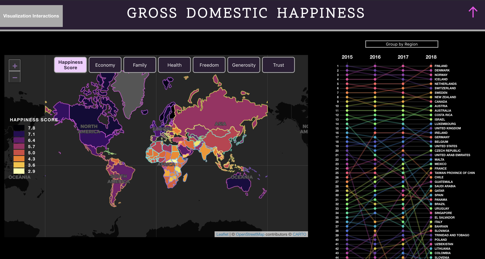

Computer Science
Gross Domestic Happiness
(In progress)
Interactive set of visualizations for data from the 2018 World Happiness Report, which tracks countries' national happiness for that year. Features an interactive bump chart showing how countries' happiness rankings have changed over time and an interactive map that allows you to view countries' specific values and also scroll to countries in the bump chart by clicking on the country in the map.
Project was implemented primarily in JavaScript with some data manipulation done in R. The bump chart was made using d3.js and the map was made using leaflet.js,turf.js
Data Analysis Dashboard
(In progress)
A simple dashboard that allows users to upload text-based datasets, review the data from them, and generate basic statistics based on the data type of the attributes. The dashboard also includes a widget for generating interactive visualizations of the data with the type of visualizations available depending on the attributes' data type.
Project was implemented primarily in JavaScript with use of the d3.js package.